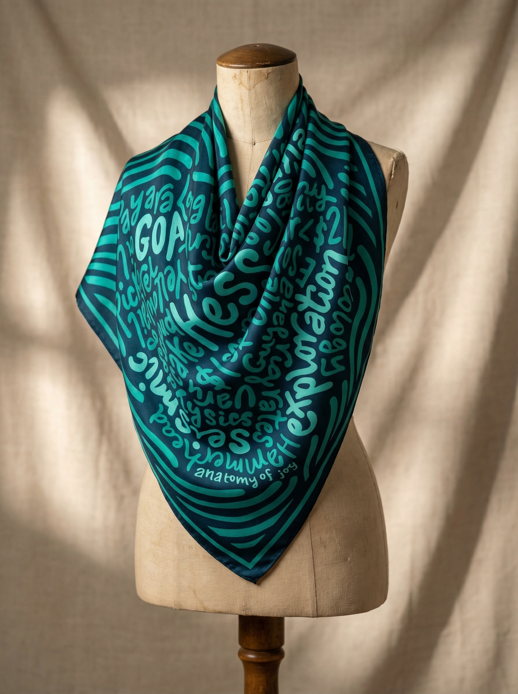

Anatomy of Joy started with one question: how do we keep the stories that shape us close, visible, and alive in daily life?
Each AOJ piece is built to feel warm, human, and intentional. Not just beautiful, but deeply personal.
Read Our Story